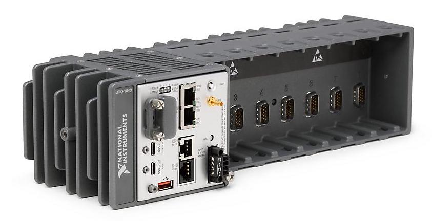

MODAQ Hardware Architecture
The Controller
The core hardware platform that MODAQ is built upon is the CompactRIO (cRIO) from National Instruments and the software code base is developed in National Instruments LabVIEW.
A cRIO is a compact and ruggedized industrial embedded controller that serves as the 'brains' of MODAQ. It contains the central processing unit and the usual components that one would expect with a computer, such as RAM, network interfaces, USB ports, and internal storage. In addition, the cRIO contains an expansion backplane for up to 8 I/O modules in a single chassis that is running a real-time Linux kernel and has an FPGA for high-performance and specialized applications.

While MODAQ is scalable and can run on any Linux-based cRIO - including models long discontinued by NI, the reference design presented in this documentation is built on the highest performance cRIO available at the time of writing, the cRIO-9049. There may be some features implemented in MODAQ that are unavailable to older, lower-powered cRIO controllers, such as DAQmx and TSN. It's important to consider that the power and capabilities of the cRIO hardware is consistent with the application requirements and performance expectations.
Modular I/O
In order to interface with sensors and instruments, the cRIO provides up to 8 slots for special-function I/O modules. Without any modules installed, most cRIOs can connect to instruments that communicate over USB, ethernet, and/or RS-232/485. Unfortunately, most applications will require additional modules. MODAQ is not limited to 8 modules, since it leverages the expansion and distributed options available within the NI ecosystem.
The size of a MODAQ build will be governed by the type and number of inputs and/or outputs that the application requires. Most modules contain multiple I/O channels. For instance, in the diagram below, the NI-9249 (±10V voltage input module) can connect up to four voltage sources on a single module.
For clarity on the distinction between a sensor and instrument, a sensor is a device that varies its output in some proportion to a quantity it's designed to measure. For instance a temperature sensor (such as an RTD) varies its resistance in a calibrated response to temperature. While an instrument can contain one or more sensors and usually has some onboard processing that outputs a signal of some sort (such serial, MODBUS), though some instruments can output an analog signal. An example of an instrument would be an IMU (Inertial Measurement Unit) which contains an accelerometer and rate gyro and can output a raw stream of the sensor data or highly processed attitude data over an RS-232 serial connection.
General I/O Support
MODAQ currently supports a wide variety of sensors and instruments that cover the vast majority of measurement requirements for MRE systems. This list is not exhaustive.

- Voltages
- 0 - 300 V rms
- ±10 V
- PTs/CTs
- Current
- 0 - 50 A rms
- ±20 mA
- Temperatures
- RTD
- Thermocouples
- Strain
- 1/4 - full bridge
- Load cells
- Position
- Rotary and/or linear Encoder
- Resolver
- GPS
- Position
- Heading
- Motions
- IMU/INS/AHRS
An example diagram of a baseline MODAQ configured cRIO with I/O modules is shown to the right.
I/O Modifications
While MODAQ has the flexibility to interface with many kinds of sensors and instruments, some development effort should be expected to create drivers to support new hardware and/or hardware of different specification from those previously used. In addition, modification of existing code may be required to meet specific project requirements that cannot be accomplished through the MODAQ Configurator Utility. Hypothetical examples that might require software modifications:
- Ingestors/decoders for additional or different instrument parameters. Example: Project requires the NED instead of ECEF coordinate reference frame from the IMU.
- Changes to hardware signal type. Example: MODAQ currently supports a variant of hardware with an analog ±10 VDC signal, however project sources a version that uses a serial output.
- Significant departure from baseline sampling support. Example: A MODAQ ingestor as written can support a maximum sample rate of 5 kHz for a particular device, however project requires 50 kHz sampling.
Since projects are rarely identical, some modification should be expected to accommodate such differences.